묶음 6 · 분교 · 고래 design/feedback70/ui_inventory.html #g6 · D6-1 ~ D6-4
화면마다 A · B · C 를 누르면 「고름」이 붙고, 맨 위 「결과 복사」로 한 번에 복사합니다. 화면 위 상태 단추로 카드에 적힌 상태를 바꿔 볼 수 있습니다. 묶음 규칙: 분교 탭 = 학교(교실 · 칠판 · 분필), 고래 강화 탭 = 고래 도크(바다빛 · 계기 · 밧줄)로 서로 다른 장소, 숨결 탭은 #64 숨결 버튼의 「금테 · 금빛 게이지 고리 · 진주 유리구슬」 언어. 세 방향은 색이 아니라 자세(그림 속 장소 / 벽에 걸린 판 / 지도 · 도면 · 카드)가 다릅니다. 정해진 것은 그대로: 오른쪽 책갈피 틀 · 칠판 머리줄(hub_frame.gd), 대답은 유나 알림(YunaToast), 위 가운데 알림 판(hud_b2.gd 7 · 보통 2), 잠금 배지 + 「Lv.N」, 낱말 「고래 강화」「심장 강화」「숨결 강화」, 가이드가 짚는 「과학실 › 짓기」「색의 공명 › 연구」「고래 강화」 단추(글자 그대로 · 한 개씩). 그림은 모두 게임 안 그림 · 이번에 만든 부품(a/s)이고 수치는 예시입니다.
합침 · 고래 강화 하나 (보호막 + 숨결) PD 결정 · scripts/menus.gd _whale + _whale_breath → 한 화면 · 심장 빠짐 · 아직 게임에는 넣지 않음 (PD 확인 뒤)
해부도 A를 그대로 키웠습니다: 도면지를 따뜻한 크림 · 남보라 잉크로(차가운 파랑을 뺌), 심장이 있던 자리에 숨결 진주(#64 숨결 버튼과 같은 금테 · 게이지 고리 · 진주 유리구슬)가 고래 머리 위에서 숨을 내쉬고, 지시선 ①은 보호막 막으로, ②는 숨결 진주로 갑니다. 하위 탭(「보호막 · 심장 / 고래 숨결」)은 없어지고, 가이드가 짚는 「고래 강화」 단추(whale_shield_btn)는 ① 카드에 글자 그대로 하나. 카드는 이 화면만의 「도면 명세표」(크림 종이 + 남보라 두 줄 테 + 금빛 가는 테 + 놋쇠 클립)입니다.
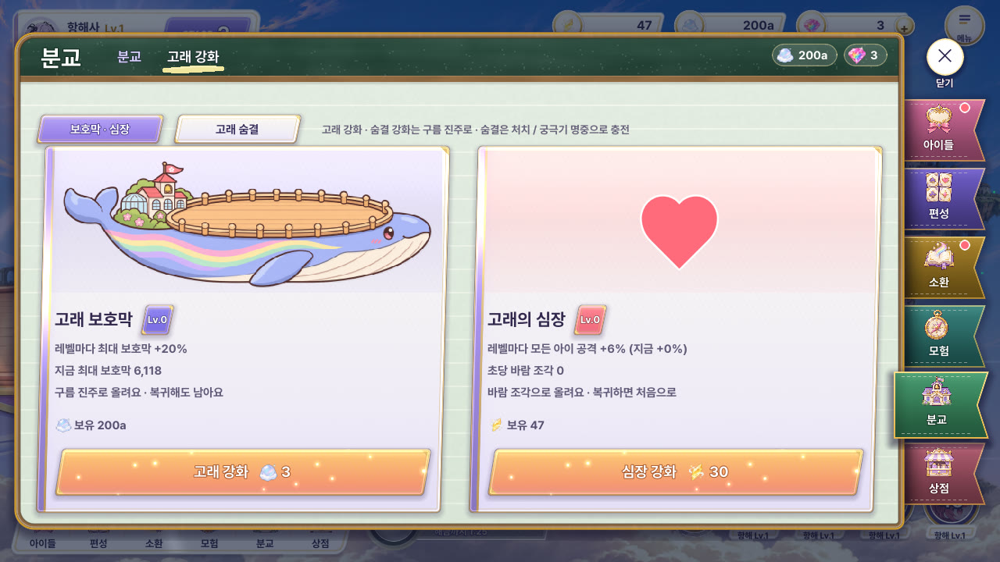

지금
「보호막 · 심장」 탭(흰 카드 둘)과 「고래 숨결」 탭(고래 그림 카드 셋 + 자동 숨결 띠)이 따로. 숨결은 탭을 한 번 더 눌러야 보이고, 심장은 바람 조각(전투 재화)이라 이 화면에서 혼자 다른 재화를 씀.
A+ · 해부도 한 장 — 보호막 막 ① · 숨결 진주 ② 추천
비용: 해부도 A 부품(도면지 · 막 · 고래 그림) + 숨결 구슬 셰이더(#64 breath_orb 재사용) + 명세표 판 1종. 게임에서는 _whale · _whale_breath 두 함수가 한 화면이 되고 하위 탭 · 심장 카드가 빠짐. 강화가 하나 더 생기면 명세표에 줄 하나.
정직한 평: 해부도의 「무엇을 손보나」가 두 갈래로 바로 읽히고, 숨결이 탭 뒤에 숨지 않아 좋음. 오른쪽 명세표가 꽉 차(세 줄 + 자동) 글자가 12px까지 내려감 — 게임에서는 효과 둘째 줄을 ⓘ로 접을 여지. 숨결 진주 위 숨 줄기는 CSS 흐림이라 게임에서는 셰이더로 더 부드럽게.
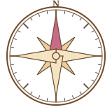
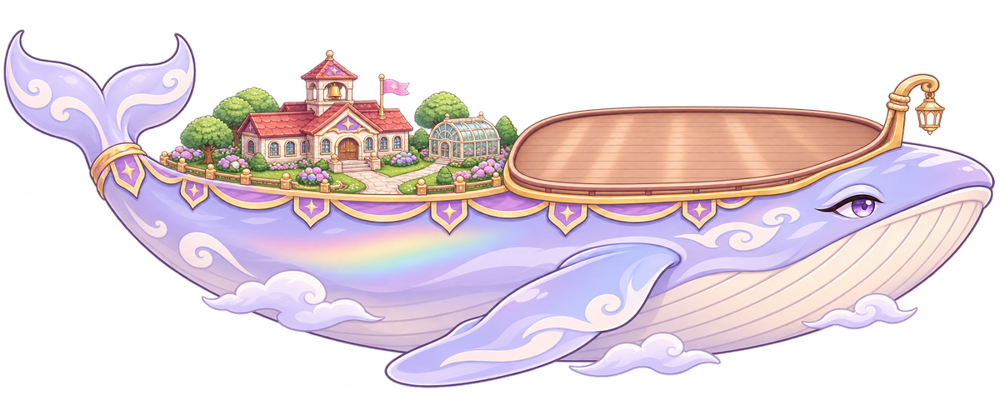
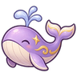
고래 보호막 Lv.12진주 · 복귀해도 남음
- 레벨마다 최대 보호막 +20%
- 지금 최대 보호막 26.1a
고래 숨결 진주 · 복귀해도 남음
숨결 위력
보스에게 팀 전투력 비례 피해 · 피해 868a (레벨마다 +20%)
숨결 강화26최대 · 다 올렸어요충전 속도
처치 · 궁극기 명중 충전량 ×1.4 · 순풍 중 추가 2배
숨결 강화17색 얼룩 지속시간
보스가 받는 피해 +15% · 색 얼룩 12초 지속 (레벨마다 +1초)
숨결 강화7심장 처리 · 저장 옮기기 조사: main.gd heart_level · heart_cost · upgrade_heart · heart_income · team_mult_base · content_power · 저장 「heart」 · school.gd heart_discount(연구 「심장 효율」) · tools/balance_sim.js
심장이 하는 일: 바람 조각(전투 재화)으로 사는 항해 성장(복귀하면 0). 레벨마다 모든 아이 공격 +6%(팀 배율, 단합 · 항해사 배율과 곱), 초당 바람 조각 생산(방치 보상에도 들어감), 비용 30 × 1.3^Lv × (1 − 5% × 「심장 효율」 연구). 이 화면 말고 사는 곳은 없음(일괄 강화는 아이들만). 퀘스트 · 가이드 · 업적은 심장을 쓰지 않음. 밸런스 모델(tools/balance_sim.js)은 전투 바람 조각을 아이 넷 + 심장 다섯으로 나눈다고 보고 벽을 계산 — 심장을 빼고 그 몫을 아이들에게 돌리면 그 모델의 항해 전투력이 STAGE 33에서 ×0.65, 100에서 ×0.56, 200에서 ×0.45, 600에서 ×0.29.
추천 (한두 줄): 심장 카드 · 「심장 강화」 단추만 없애고 효과는 전투의 「일괄 강화」가 아이들과 함께 가장 싼 순서로 사게 접는다 — 수치 · 밸런스 모델 · 저장 키 「heart」가 그대로라 옛 저장은 옮길 것이 없고(복귀하면 0이라 오래 남지도 않음), 연구 「심장 효율」은 글만 「일괄 강화 속 고래 심장 비용 -5%」로. 아예 없앤다면 불러올 때 그 레벨까지 쓴 바람 조각을 돌려주고 키를 버리면 저장은 안 깨지지만, 벽이 당겨져 HP 곡선을 다시 맞춰야 함.
① 일괄 강화로 접기 추천
비용: main.buy_all 후보에 심장 한 줄 + 일괄 강화 연출에 「고래 심장 Lv.N」 한 줄. 저장 · 밸런스 바뀜 없음.
장단: 화면이 보호막 + 숨결로 깔끔해지고 지금보다 심장을 더 자주 사게 됨(지금은 메뉴를 열어야 삼). 심장이 눈에 덜 띔.
② 아예 없애고 돌려주기
비용: 불러올 때 heart Lv까지 쓴 바람 조각 환급 · 「심장 효율」 연구 진주 환급(또는 다른 연구로 바꿈) · 스테이지 HP 곡선 · balance_sim 다시.
장단: 가장 단순한 규칙. 그대로 두면 모델 전투력 −35%(33칸) ~ −71%(600칸)라 벽이 크게 당겨짐.
③ 보호막에 합치기
비용: 고래 강화 레벨마다 공격 배율 + 저장 환산식.
장단: 진주로 사는 영구 강화에 공격력이 붙어 복귀해도 남음 — 「복귀하면 0」 항해 성장 고리가 깨지고 진주 가치가 크게 바뀜. 비추천.
D6-1 · 분교 (교실 · 연구) scripts/menus.gd _school · 탭 「분교」 = 학교
교실 셋(과학실 · 체육관 · 급식실)은 그림 속 방, 연구 다섯은 칠판. 가이드가 짚는 「과학실 › 짓기」「색의 공명 › 연구」는 글자 그대로 한 개씩 둡니다.
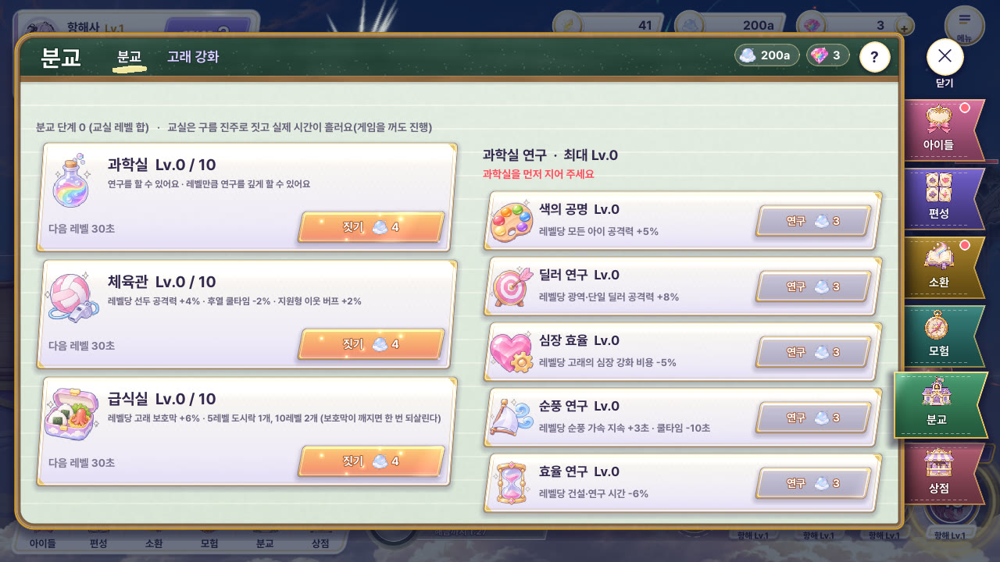
지금
칠판 머리줄 + 책갈피 틀 아래가 연한 줄 공책 한 장. 교실 · 연구가 같은 흰 카드 8장이라 「학교」라는 장소가 느껴지지 않음. 과학실 잠김은 빨간 글자 한 줄.
A · 인형집 단면 — 교실 셋이 그림 속 방 추천
비용: 집 틀 1장 + 교실 속 그림 3장(원근 상자 방 · 가구 앞뒤 2겹, build_rooms.mjs) · 아이 그림 재사용. 교실이 늘면 층을 더해야 하고(지금 3칸 고정), 방이 작아 설명은 두 줄까지.
정직한 평: 「학교에 들어간다」는 느낌이 셋 중 가장 강함. 방 속이 이제 진짜 방(창 · 칠판 · 실험대 · 골대 · 배식대, 아이가 가구 뒤에 섬)이라 인형집이 살아남. 남은 약점: 아래 두 방은 252px라 소품이 작고, 그림 결이 벡터라 게임의 붓 그림 아이들보다 한 단 매끈함.


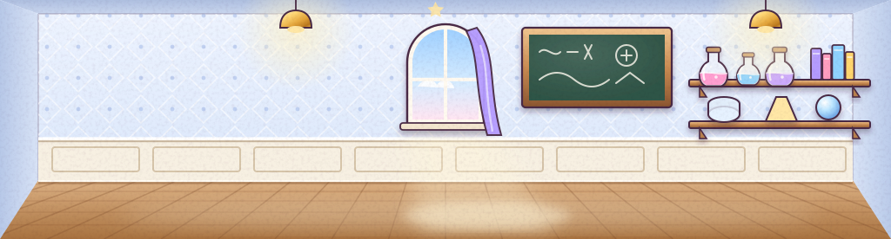
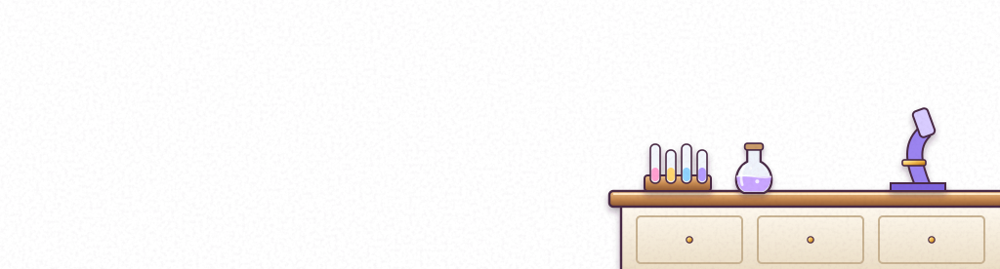
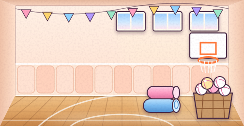
⏳ 02:41 남음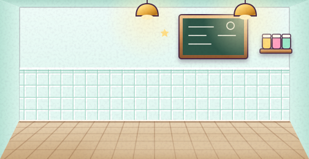
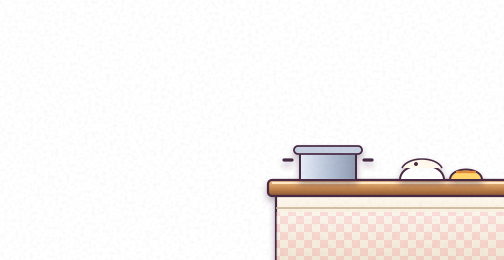
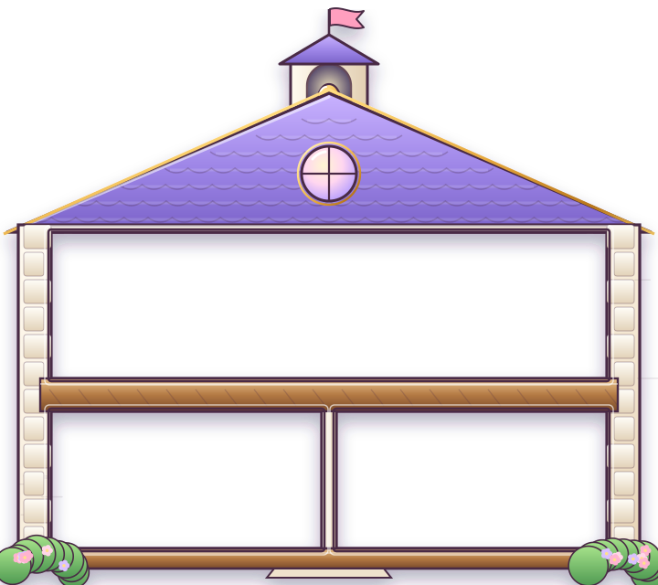
과학실 Lv.3 / 10
연구를 할 수 있어요 · 레벨만큼
연구를 깊게 할 수 있어요
체육관 Lv.2 / 10
선두 공격력 +4%
후열 쿨타임 -2%
급식실 Lv.1 / 10
고래 보호막 +6%
5Lv 도시락 1개
과학실 칠판 연구 최대 Lv.3
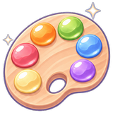
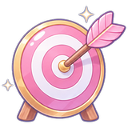
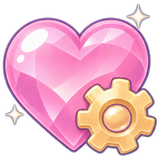
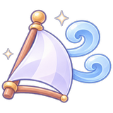
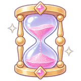
B · 교실 벽 — 코르크 게시판 + 칠판
비용: 코르크 · 칠판 · 징두리 판 결(만든 부품) + 종이 쪽지 3장. 교실이 늘면 쪽지를 한 장 더 꽂으면 되어 가장 늘리기 쉬움. 대신 「방 안을 들여다보는」 맛은 사진 액자 크기만큼만.
정직한 평: 재질감(나무 · 코르크 · 분필)이 가장 진해서 고급스럽지만, 「벽 앞에 서 있다」 쪽이라 화면이 다소 정적임. 칠판 연구 줄은 셋 중 가장 읽기 좋음.
과학실 Lv.3 / 10
연구를 할 수 있어요 · 레벨만큼 연구를 깊게 할 수 있어요
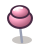
체육관
Lv.2 / 10레벨당 선두 공격력 +4% · 후열 쿨타임 -2% · 지원형 이웃 버프 +2%
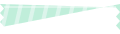
급식실
Lv.1 / 10레벨당 고래 보호막 +6% · 5레벨 도시락 1개, 10레벨 2개
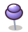
과학실 연구 최대 Lv.3
C · 고래 등 위 분교 지도
비용: 양피지 · 책상 결 + 고래 그림을 지도 잉크로 물들여 재사용(새 그림 0장). 「분교가 고래 위에 있다」가 가장 잘 보이지만, 깃발 자리가 고래 그림에 묶여 교실이 늘면 자리 잡기가 어려움.
정직한 평: 세계관 전달은 최고, 다만 갈색 지도 · 책상이라 앞 두 안보다 라벤더 · 크림 결이 약하고 「고래 도크」 탭과 장소감이 겹칠 위험이 있음.
과학실 Lv.3 / 10
연구를 할 수 있어요 · 레벨만큼 연구를 깊게
급식실 Lv.1 / 10
고래 보호막 +6% · 5Lv 도시락 1개
짓기4체육관 Lv.2 / 10
선두 공격력 +4% · 후열 쿨타임 -2%
짓기5짓는 중 02:41최대 · 다 지었어요연구 일지과학실 Lv.3 · 연구 최대 Lv.3
D6-2 · 고래 강화 (보호막 · 심장) scripts/menus.gd _whale · 탭 「고래 강화」 = 고래 도크
학교 탭과 다른 장소: 하늘빛 · 밧줄 · 계기 · 도면. 가이드 「whale_btn」은 보호막 쪽 「고래 강화」 단추 하나(Menus.whale_shield_btn), 낱말 「고래 강화」「심장 강화」 그대로.
지금
분교 탭과 같은 줄 공책 바탕 위 흰 카드 둘. 고래 · 하트 그림이 카드 머리에 붙은 사진이라 「고래를 손본다」는 느낌이 없음.
A · 고래 해부도 — 보호막 막 · 심장 자리 하트 추천
비용: 도면 종이 결 + 보호막 막(만든 부품) + 게임 고래 그림. 「무엇을 강화하나」가 그림에서 바로 읽힘. 세 번째 강화가 생기면 지시선 하나만 늘리면 됨.
정직한 평: 셋 중 가장 「이 화면만의 그림」. 파란 도면 결이 라벤더 판에서 조금 차갑게 보일 수 있어 종이 색을 더 따뜻하게 조정할 여지.
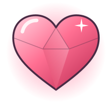
고래 보호막 Lv.12
- 레벨마다 최대 보호막 +20%
- 지금 최대 보호막 26.1a · 복귀해도 남아요
고래의 심장 Lv.8
- 레벨마다 모든 아이 공격 +6% (지금 +48%)
- 초당 바람 조각 12 · 복귀하면 처음으로
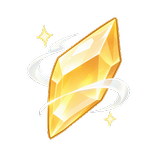
보유 1.00cB · 고래 정비 도크 + 양쪽 계기판
비용: 계기판 2장 · 바늘(만든 부품) + 노을 하늘 · 고래 앞모습 재사용. 「손본다」 맛이 가장 크고 레벨 업이 바늘로 보임. 계기 숫자는 최대값이 없어 바늘은 「다음 레벨까지」만 뜻함.
정직한 평: 장소감(도크)이 가장 확실해 분교 탭과 확실히 갈림. 부두에 아이 둘 · 계류 밧줄 · 상자 · 밧줄 사리를 놓아 아래가 더는 비지 않고, 고래 앞모습의 잘린 왼쪽 끝은 하늘로 녹임. 호두나무 판이 B 분교안과 재질이 겹치니 둘을 같이 고르면 한쪽 결을 바꿔야 함.
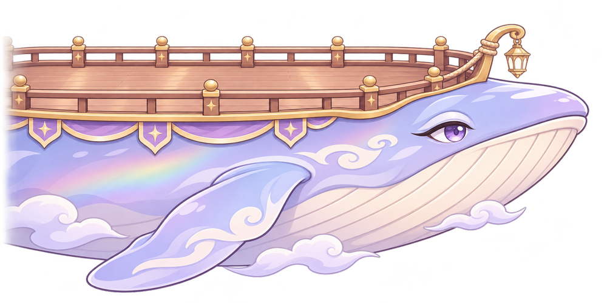
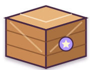
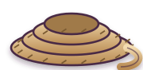
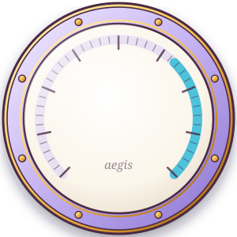
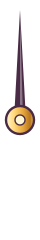
Lv.12최대 26.1a고래 보호막
레벨마다 최대 보호막 +20% · 복귀해도 남아요
고래 강화3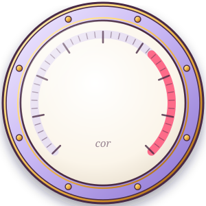
Lv.8공격 +48%고래의 심장
레벨마다 모든 아이 공격 +6% · 복귀하면 처음으로
심장 강화30C · 고래 초상 카드 둘 (정돈)
비용: 가장 적음(카드 2장 + 그림 재사용). 지금 구조와 같아 옮기기 쉽지만 「도크」라는 장소감은 바탕 빛 정도라 분교 탭과의 차이가 셋 중 가장 약함.
정직한 평: 깔끔하고 읽기 쉬우나 「카드 둘」이라 지금 화면의 고급판에 가깝고 묶음 규칙(다른 장소)을 가장 덜 채움.
고래 보호막 Lv.12
- 레벨마다 최대 보호막 +20%
- 지금 최대 보호막 26.1a
- 구름 진주로 올려요 · 복귀해도 남아요
- 보유 진주 200a
고래의 심장 Lv.8
- 레벨마다 모든 아이 공격 +6% (지금 +48%)
- 초당 바람 조각 12
- 바람 조각으로 올려요 · 복귀하면 처음으로
- 보유 바람 조각 1.00c
D6-3 · 숨결 강화 탭 scripts/menus.gd _whale_breath · #64 숨결 구슬 언어
세 강화(위력 · 충전 · 얼룩)가 모두 #64 숨결 버튼과 같은 「금테 + 금빛 게이지 고리 + 진주 유리구슬 안 물감」. 고리 = Lv/20, 구슬 물감 = 같은 비율. 단추 낱말 「숨결 강화」.
지금
같은 고래 그림 카드 셋 + 아래 흰 띠 「자동 숨결 OFF」. 전투의 숨결 구슬과 아무 연결이 없음.
A · 진주 구슬 셋 추천
비용: 구슬 셰이더는 #64 breath_orb 그대로 재사용(게이지 = Lv). 가장 싸고 전투 버튼과 바로 이어짐. 셋이 같은 모양이라 색 · 아이콘으로만 구분됨.
정직한 평: 구슬이 빛나서 셋 중 가장 「보석 강화」다운 고급감. 단조로움은 구슬 크기 차(지금 고른 덱 숨결 물감 색)로 보완.
B · 숨결 리본 하나에 세 마디
비용: 리본 곡선 1장 + 구슬 재사용. 「한 번의 숨결이 세 성질로 이루어짐」이 이야기로 읽힘. 매듭 이름표가 매달려 단추가 A보다 아래로 내려감.
정직한 평: 흐름이 우아하고 숨결(바람) 느낌이 셋 중 가장 강함. 리본 곡선이 단색이면 싸 보여서 무지개 결 · 윤기를 꼭 살려야 함(시안엔 넣음).
C · 숨결의 악보 (오선 위 음표 구슬)
비용: 악보 종이 · 높은음자리표(만든 부품). 음표 구슬 높이 = Lv(오선 왼쪽 0 · 10 · 20 눈금)라 「얼마나 올렸나」가 한눈에, 자동 숨결은 도돌이표 줄. 대신 종이 한 장이 판 대부분을 덮어 도크 장소감은 약하고 크림 면이 넓음.
정직한 평: 오선 · 꼬리 달린 음표 · 셈여림 · 겹친 종이 · 책갈피 리본으로 다시 그려 「CSS 종이 한 장」 느낌은 벗음. 그래도 악보 = 음악이라 「숨결」과의 연결이 한 번 꺾이고, 구슬이 76px로 작아 #64 구슬 언어가 A보다 약함. 셋 중 우선순위 낮음.
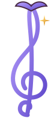
20100 fmfpD6-4 · 분교 완성 알림 (위 가운데) scripts/hud.gd school_notice → hud_b2 알림 판 「보통 2」
자리 · 크기 · 4초 금 실선 · 「갈 곳 ▶」 · 쌓임(뒤 판 모서리 + 「다음 N개」)은 정해진 알림 판 그대로. 시안은 「분교」 종류의 얼굴만 다릅니다. 단추 글자는 게임 그대로 「분교로 ▶」(hud.gd school_notice), 날아가 닿는 곳은 하단 메뉴 「분교」 칸 가운데(왼쪽 고정이라 1280 · 1600 모두 x 340 · y 666). ▶ 다시 로 끝까지 봐 주세요.

지금
남색 상자 「과학실 Lv.1 완성!」 + 반짝 하나. 분교와 이어지는 그림 · 갈 곳이 없음.
A · 분교 종이 울리고 리본 「완성!」 추천
비용: 종 그림 1장(만든 부품) + 정해진 판. 종이 세 번 흔들려 소리 없이도 「학교 소식」이 읽힘. 연구 완료도 같은 종이라 둘의 구분은 리본 글자뿐.
정직한 평: 정해진 판 규칙을 지키면서 분교 색이 가장 자연스럽게 묻어남.
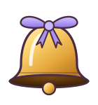
B · 칠판 쪽지
비용: 칠판 결 재사용. 분교 탭(칠판 머리줄)과 바로 짝지어짐. 다만 알림 판의 크림 결 규칙에서 벗어나 「이 알림만 다르게 생김」 — 판 통일 규칙과 충돌 가능.
정직한 평: 눈에 잘 띄고 예쁘지만 전투 위 짙은 판이 하늘을 무겁게 만듦.
C · 판이 편지로 접혀 하단 「분교」에 살랑 내려앉음
비용: 봉투 그림 1장(만든 부품) + 접힘 · 낙엽 길 연출. 「어디에 담겼는지」가 가장 분명하고 빛 터짐이 없음. 대신 판이 4초를 다 채우지 않고 2.5초에 접혀 「분교로 ▶」를 누를 시간이 짧고, 칸 위 봉투 배지가 놓침 빨간 점과 겹치지 않게 규칙을 하나 더 정해야 함.
정직한 평: 이전 「그림 튀어 날아감」을 버리고 종이 · 리본 결로 바꿔 현대식 폭발 느낌은 없어짐. 셋 중 가장 동화 같고 예쁘지만 움직임이 길어(5.5초) 전투 중에 산만할 수 있음.
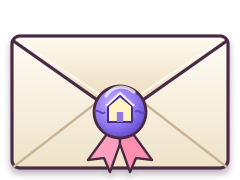